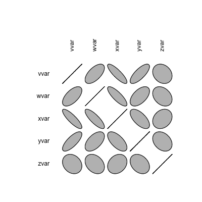
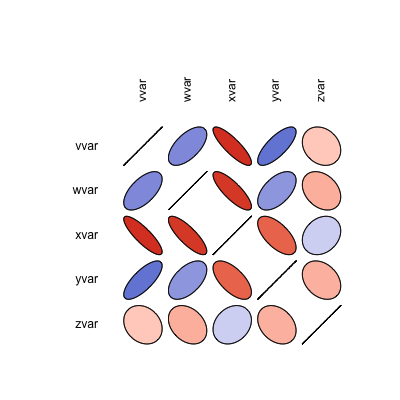

Correlation matrix
Problem
You want to visualize the strength of correlations among many variables.
Solution
Suppose this is your data:
set.seed(955) vvar <- 1:20 + rnorm(20,sd=3) wvar <- 1:20 + rnorm(20,sd=5) xvar <- 20:1 + rnorm(20,sd=3) yvar <- (1:20)/2 + rnorm(20, sd=10) zvar <- rnorm(20, sd=6) # A data frame with multiple variables data <- data.frame(vvar, wvar, xvar, yvar, zvar) # vvar wvar xvar yvar zvar # -4.252354091 5.1219288 16.021933 -15.156368 -4.08690435 # 1.702317971 -1.3234340 15.838169 -24.063902 3.46842292 # 4.323053753 -2.1570874 19.855167 2.306770 -3.04493067 # ... # 17.220012698 19.5663648 4.887111 30.906004 -6.83781743 # 17.793359218 20.1976463 -2.880213 15.777335 -1.50437241 # 19.319909163 19.4131664 -5.236230 24.047036 -2.67059907
To make the graph:
library(ellipse) # Make the correlation table ctab <- cor(data) # round(ctab, 2) # vvar wvar xvar yvar zvar # vvar 1.00 0.61 -0.85 0.75 -0.21 # wvar 0.61 1.00 -0.81 0.54 -0.31 # xvar -0.85 -0.81 1.00 -0.63 0.24 # yvar 0.75 0.54 -0.63 1.00 -0.30 # zvar -0.21 -0.31 0.24 -0.30 1.00 # Make the graph plotcorr(ctab) # Do the same, but with colors corresponding to value colorfun <- colorRamp(c("#CC0000","white","#3366CC"), space="Lab") plotcorr(ctab, col=rgb(colorfun((ctab+1)/2), maxColorValue=255))
 
Notes
For more information on generating the correlation table (with numbers), see: ../../Statistical analysis/Regression and correlation